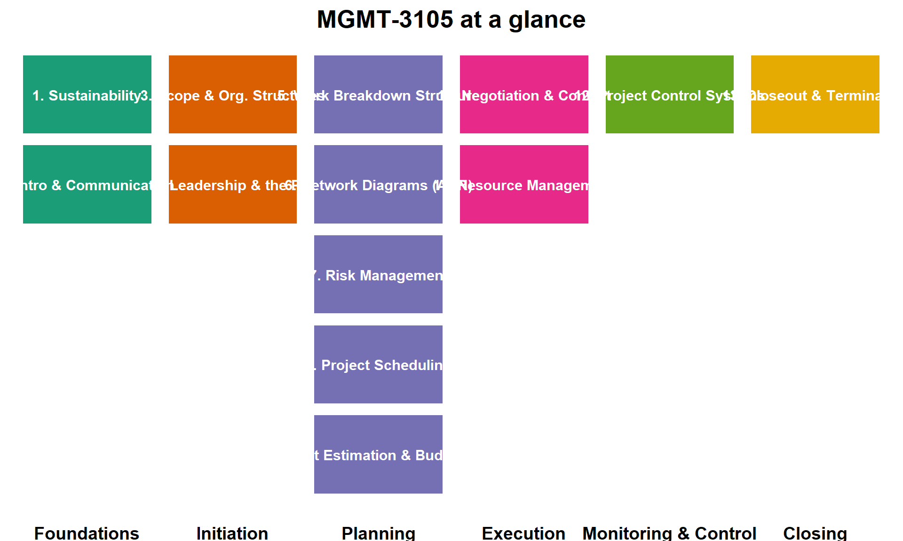

Sustainability and Business Practices
An Introduction to Project Management (MGMT-3105)
Lecture notes accompanying MGMT-3105 - Sustainability and Business Practices.
Welcome
This book is the lecture-note companion for MGMT-3105 – Sustainability and Business Practices, a second-year course that introduces the philosophy of sustainability and the discipline of project management to students in electromechanical and mechanical engineering technology programs.
You are training for careers in the automotive, food-processing, and defense industries. In every one of those sectors you will, sooner than you expect, be handed a slice of a project: a line retrofit, a new product introduction, a validation campaign, a plant move. This course is about the structure that keeps such work on scope, on schedule, and on budget — and about doing it in a way that does not quietly borrow from the future to pay for the present.
Why a course that pairs sustainability with project management?
At first glance they look like two subjects stapled together. They are not. Every project consumes resources — materials, energy, money, human effort — and every project leaves something behind: a product, a process, a waste stream, a set of habits in the organization. Project management is the set of tools that decides how those resources are spent, and sustainability is the lens that asks whether that spend was worth it beyond the next quarter. A project manager who can build a work breakdown structure but cannot reason about lifecycle impact is only doing half the job.
Course map
Course learning outcomes
On successful completion of MGMT-3105 you will be able to reliably:
- Communicate the philosophy of project selection, including the Net Present Value method.
- Communicate the theory of budgeting and scheduling.
- Connect project-management concepts to real-world examples.
- Identify the consequences to society of poor project planning.
- Communicate the theory of progress management.
- Discuss the problems of managing people and levelling allocated resources.
- Communicate the organizational implications of closing a project.
- Communicate negotiation theory.
- Communicate effectively in a global environment.
- Identify the use of sustainability in designs and in project management.
The running project
Throughout the book we return to one worked scenario, taken from the MGMT-3105 term project: your company designs and manages the launch of a 1/18-scale radio-controlled vehicle replica for the toy market, then wins a contract to manufacture 100 000+ units for the following holiday season. You choose the vehicle, the body and frame materials (steel, aluminium, or carbon fibre), and one of two Canadian motor/control-system suppliers. Every chapter uses a piece of that project — its scope, its WBS, its schedule, its budget, its risks, its closeout — so the tools connect to a single concrete thing rather than a dozen disconnected examples.
How the book is organized
Each chapter opens with measurable learning objectives and a real-world hook, develops the theory with plain-language explanations and LaTeX equations, and illustrates it with R-generated figures. Worked examples are shown step by step; wherever an example is a self-contained calculation, it is offered as a live, editable R cell you can run and modify in your browser. Collapsible Practice and Discussion blocks let you test yourself before revealing the answer, and each chapter closes with curated YouTube videos for a second explanation in a different voice.
Assessment (for the live course)
| Component | Timing | Weight |
|---|---|---|
| Midterm test | Week 7 | 25 % |
| Final test | Week 14 | 25 % |
| Weekly quizzes | Weekly | 12 % |
| Weekly case studies | Weekly | 12 % |
| Assignment Phase A | Week 7 | 10 % |
| Assignment Phase B | Week 11 | 10 % |
| Assignment Phase C | Week 14 | 6 % |
Quizzes and case studies require attendance. Tests are cumulative, closed-book with a handwritten aid sheet, and kit calculators are permitted. To pass, you need an overall grade of 50 % and completion of the mandatory work.
A note on academic integrity
Write your reports and answers in your own words. Whenever you take an idea or a passage from another author — including a classmate, a previous year’s work, or an AI tool — acknowledge it with quotation marks where appropriate and a proper citation. If you are unsure how to credit shared work, ask before you submit. By submitting, you put your name to the integrity of the work.